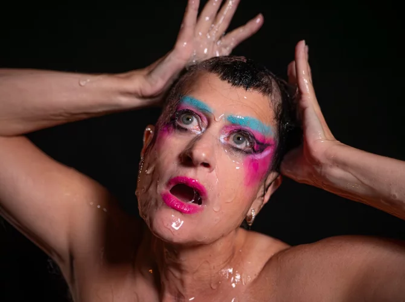

Peaches is a Canadian musician and performance artist known for her provocative lyrics, boundary-pushing performances, and genre-defying blend of electroclash, punk, and electronic music. Her influential works, including the iconic album 'The Teaches of Peaches,' have cemented her as a feminist icon in music.
Peaches' fearless approach to music combines raw, sexually charged lyrics with experimental electronic and punk sounds, making her a trailblazer in the electroclash movement. Her live performances are celebrated for their theatricality and unapologetic empowerment.
Music shouldn't be political? On the contrary, especially now as the mental world clock steadily ticks toward Total Collapse. Professional rebel Peaches is back with a vengeance on 'No Lube So Rude,' an album brimming with biting humor, sex, wisdom—in short, everything conservative prudes fear. But don't forget that behind all that defiance lies a gifted musician who has collaborated with giants like Iggy Pop and Daft Punk, channeling her and your rage into electrifying electroclash. You have a voice, so scream along with Peaches.
Muziek mag niet politiek zijn? Juist wel, helemaal nu de mentale wereldklok gestaag doortikt naar de Totale Teloorgang. Beroepsrebel Peaches houdt opnieuw flink huis met 'No Lube So Rude', een plaat vol venijnige humor, seks, wijsheid; kortom alles waar conservatieve spruitjesvreters bang voor zijn. Maar vergeet niet dat achter al die strijdbaarheid een begenadigd musicus schuilt, die samenwerkte met giganten als Iggy Pop en Daft Punk, en haar en jouw woede laat uitbarsten in waanzinnige electroclash. Je hebt een stem, dus schreeuw mee met Peaches.
♀️ Female
No